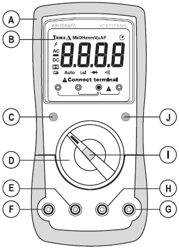
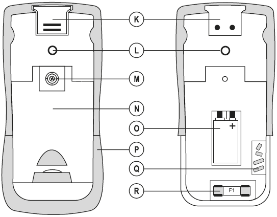
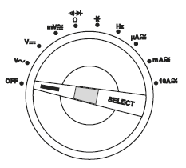

Multimeter
Gebruik van een multimeter
Voltcraft Digitale Multimeter VC271 TRMS
Een multimeter heb je in twee uitvoeringen:
- Switched Range: Hierbij moet je zelf de gewenste meetinstelling instellen.
- Auto range: Deze functie stelt het gepaste meetbereik voor elke toepassing automatisch in. De meetbereiken moeten handmatig worden ingesteld. Begin de metingen altijd op het hoogste meetbereik en schakel indien nodig naar een kleiner meetbereik.
Op de draaischakelaar bevindt zich een functieknop SELECT waarmee je kunt schakelen naar een subfunctie, wanneer een meetfunctie dubbel bezet is (b.v. omschakeling weerstandsmeting – diodetest en continuïteitsmeting of AC/DC-omschakeling in het spanningsbereik). Met elke keer drukken schakelt u de functie om.
Zwarte kabel: COM poort
Rode draad: INPUT poort (een van de andere poorten)
Bronnen
Hoe gebruik je een multimeter?
Overzicht
Voorkant

- A Gegoten rubber bescherming
- B Display
- C REL/HOLD-knop
- D Draaiknop voor selectie van de meetfunctie
- E mA/μA-meetbus
- F 10 A-meetbus
- G V/Ω-meetbus (“positief potentiaal” voor gelijkstroom)
- H COM-meetbus (referentiepotentiaal, “negatief potentiaal”)
- I SELECT-knop voor omschakelen van de functie
- J Low Imp. 400 kΩ-knop voor omschakeling van de impedantie
Achterkant

- K Aansluiting met schuifafdekking voor optionele bevestiging
- L Schroefdraad voor statiefbevestiging
- M Schroef van het batterijvak
- N Opklapbare neerzetbeugel
- O Batterijvak
- P Afdekking voor batterijvak en zekeringen
- Q Zelfherstellende PTC-zekering
- R Zekering F1
Draaikonop

Op de draaiknop bevindt zich een functieknop “SELECT”, waarmee je omschakelt naar een subfunctie wanneer een meetfunctie dubbel bezet is (b.v. omschakeling weerstandsmeting – diodetest en continuïteitsmeting of AC/DC-omschakeling in het spanningsbereik). Met elke keer drukken schakel je de functie om.
Display
- 1 Echt-effectieve waarde meting
- 2 Delta-symbool voor relatieve waardemeting (= + (= referentiewaardemeting)
- 3 Symbool voor mega (macht 6)
- 4 Symbool voor kilo (macht 3)
- 5 Ohm (eenheid van elektrische weerstand)
- 6 Hertz (eenheid van frequentie)
- 7 Symbool voor nano (macht -9)
- 8 Symbool voor milli (macht -3)
- 9 Volt (Eenheid van elektrische spanning)
- 10 Symbool voor micro (macht -6)
- 11 Ampère (eenheid voor elektrische stroom)
- 12 Farad (eenheid van elektrische capaciteit)
- 13 Automatische uitschakeling is geactiveerd
- 14 Meetwaardeweergave
- 15 Symbool voor diodentest
- 16 Symbool voor de akoestische continuïteitstester
- 17 Symbool voor lage impedantie
- 18 Aanduiding voor de juiste aansluiting van de meetbussen
- 19 Automatische meetbereikkeuze is actief
- 20 Indicatie voor het vervangen van de batterij
- 21 Hold-functie is actief
- 22 Symbool voor gelijkstroom ()
- 23 Polariteitsaanduiding voor stroomrichting (minpool)
- 24 Symbool voor wisselstroom ()
- 25 Waarschuwingssymbool voor gevaarlijke spanning
Functie
Verbinding testen (continuiteit)
Er mag geen spanning staan op hetgeen je wilt meten.
Als er elektrische verbinding is, is de “weerstand” van de verbinding laag. Multimeters hebben meestal een stand waarmee je een piepje hoort als de verbinding goed is.
Weerstand
Stel stand voor weerstand meten in. Er mag geen spanning staan op hetgeen je wilt meten.
Houdt de twee meetpennen tegen elkaar. De meter geeft nu iets aan inde buurt van 0 (0,01) en er klinkt een piepje.
| Meten aan | Verwachtte waarde |
|---|---|
| draad, zekering, schakelaar | Hooguit enkele Ohms |
| gloeilampje | 1-30 Ω |
| gloeilamp 220V | 25-500 Ω |
verwarmingselement 1000 Watt (koffiezetter) 2000 Watt (electr. kacheltje) |
60 Ω 30 Ω |
Gelijkspanning
Normale batterijen 1,5V (A,AA, AAA, knoopcel): Vol : > 1,55 Volt ; Leeg: < 1,4 Volt
Batterij voltage testen
Rode kabel in V, schakelaar op V gelijkstroom. Rode kabel aan + batterij, zwarte kabel aan -.
Divers
Kleuren electrische bedrading
| Draad | Kleur huidig | Kleur oud (>50 jaar) |
|---|---|---|
| Fase - 220 V | Bruin | Groen |
| Nulleiding - 0 V | Blauw | Rood |
| Aarde | Groen/Geel | Grijs |
| Schakeldraad | Zwart | Zwart |